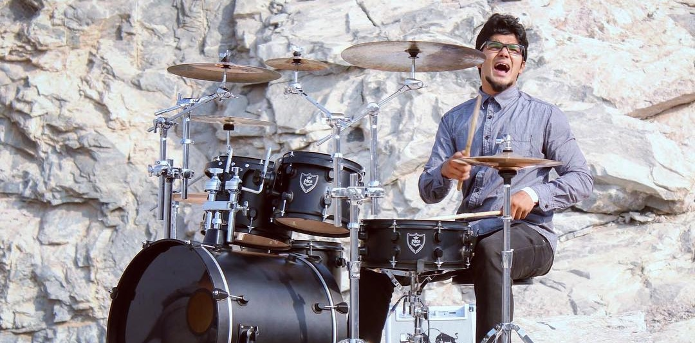

Introduction

Welcome to the journey of Liben Toms
a drummer, mentor, storyteller who transforms every beat into a testament of faith and resilience.

With a drumming journey that began at the age of five using bongos and a practice pad made from PVC pipes, Liben Toms passion for rhythm has been a lifelong pursuit. By age 13, he was already honing his skills in church, where performing alongside professional musicians provided a solid musical foundation.
Liben quickly grew into a talented musician, gaining experience as an active member of his church’s music team and participating in school and college music events, competitions, and more. This early exposure shaped him into a versatile artist, capable of mastering a wide range of genres from gospel and rock to metal, R&B, funk, and beyond.
Over the past two decades, Liben has emerged as one of India’s most respected drummers, captivating audiences both locally and globally. He has been a vital part of several bands over the years, including Transitpoint, FOI, Bryden-Parth, The NEWS, Incardinine, Distorted Melody, Gospel Garage, Dementia, and numerous indie musicians. Liben has contributed creatively to Bryden-Parth’s endeavors, such as their latest album, ‘Chameleon World’.
He has also collaborated with acclaimed artists like Stephen Devassy and performed alongside the internationally renowned band Avalon during their tour of India. His dedication has been pivotal in shaping the Indian gospel music scene, contributing to notable Christian production houses like Red Sea Films, Rex Media, and Jaago Music, as well as musical releases for churches such as City Harvest AG Church, FOLJ Church, reaching and inspiring countless believers and non-believers.
Liben’s career has taken him across 20 countries and hundreds of cities, performing with esteemed musicians and bands. With over 700 live shows and more than 150 recorded tracks to his name, he has earned multiple “Best Drummer” awards and broadened his reach with commercial collaborations, including projects for brands like OnePlus and more. But his impact goes beyond accolades, Liben is passionate about training and mentoring aspiring drummers, using music as a platform to inspire and uplift the next generation.
For Liben, drumming is more than a profession, it is a God-given gift and a means of worship. Faith lies at the heart of all he does, and he is dedicated to sharing the transformative power of his beliefs through music.
Liben now runs a top-quality studio equipped with the best instruments and arrangements, enabling him to further his passion for music production and collaboration.